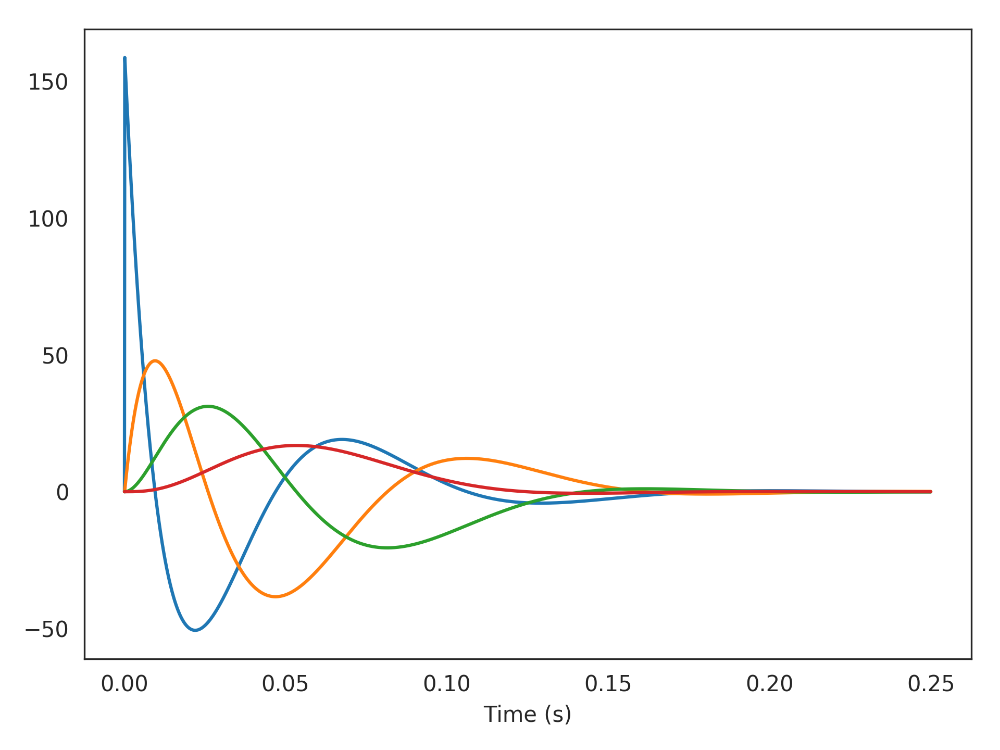

nengolib.signal.state_norm¶
-
nengolib.signal.state_norm(sys, norm='H2')[source]¶ Computes the norm of each dimension of
xin the state-space.Parameters: sys :
linear_system_likeLinear system representation.
norm :
string, optionalDefaults to
'H2'. Must be one of:'H2': The power of each dimension in response to white-noise input with uniform power, or equivalently in response to a delta impulse. [1]
Returns: (len(sys),) np.arrayThe norm of each dimension in
sys.References
[1] http://www.maplesoft.com/support/help/maple/view.aspx?path=DynamicSystems%2FNormH2 Examples
>>> from nengolib.signal import state_norm >>> from nengolib.synapses import PadeDelay >>> sys = PadeDelay(.1, order=4) >>> dt = 1e-4 >>> y = sys.X.impulse(2500, dt=dt)
Comparing the analytical H2-norm of the delay state to its simulated value:
>>> assert np.allclose(np.linalg.norm(y, axis=0) * np.sqrt(dt), >>> state_norm(sys), atol=1e-4)
>>> import matplotlib.pyplot as plt >>> plt.plot(sys.ntrange(len(y), dt=dt), y) >>> plt.xlabel("Time (s)") >>> plt.show()
